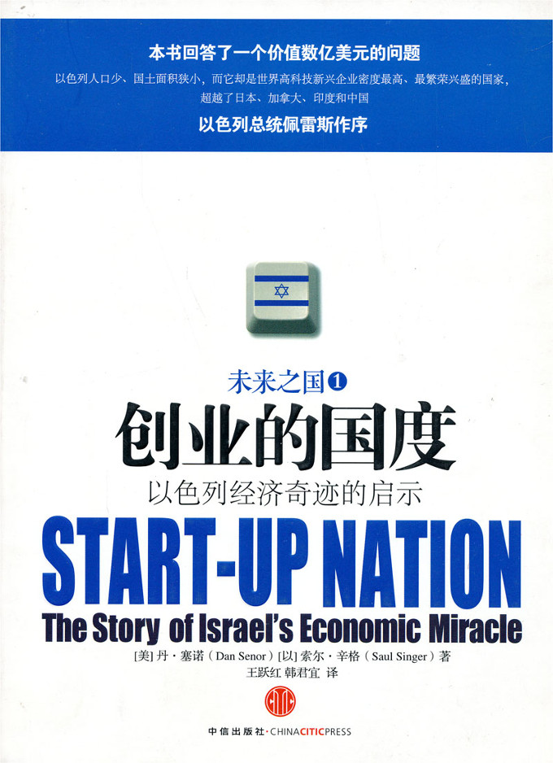

注：【】部分为笔者心得，非原文摘抄。
- 基于生产能力的增长才是经济可持续增长的最坚实的基础。
- 创业精神是经济体“进化和再生”的主要动力。
- 如果不能包容相当数量的失败，真正的创新也就不可能实现。
- 在以色列军队里，所有的表现——无论是成功的还是不成功的——所有行动结果的价值都是中性的，只要所承担的风险是理智的，经过慎重思考的，那么总有可以总结和学习的东西。
- 我们不会鼓励你过分追求优异的表现，也不会因为一次糟糕的失败就不再看好你。——以色列空军教员
- 仅靠一个出色的想法是不可能撼动一个看似强硬、固执的领导团队的，你必须乐于承担更重的责任，而不仅仅是简单地跟着高层的节奏亦步亦趋。
- 在以色列的公司里，你很少看见有人在背后议论别人，你总是当面就能知道所有的事情，这的确减少了很多浪费在胡扯和说谎上的时间。
- 对于领导来说，最关键的就是士兵对他的信心。
- 一个指挥官总是担心自己的下属会不会越级去揭发自己是一种不健康的状态。
- 乔治·华盛顿很清楚他的“将军”地位并不代表什么：他必须成为一名出色的将军，从根本上说，那就是要让人们发自内心地跟随他。
- 走远一点，停久一点，看透一点。——《户外杂志》
- 先打理好头发，再考虑旅行。——雅尼夫
- 你越想控制我，我就越要让你看到我能挣脱。
- 创新常常依赖于某个与众不同的想法，而想法来自于经验，真正的经验往往和年龄或者成熟相伴相从。
- 过多的时间和经验只能教给你察觉现存或即将发生的问题，不会教会你创新和改革的能力。
- 刻板地遵循已有信条，在评估敌人的行为时经常会出现错误。
- 假如飞行员能将错误转化成一次改善个人和团队表现的机会，那么这样的犯错是被允许的。
- 不要仅仅因为它在过去发挥过作用，就固守某个想法或方法。
- 思想的僵化往往是胜利之后的罚金，也是日后失败的伏笔。
- 一切大的机构，无论是军队还是企业，都必须始终防范顺从、集体思想的出现，否则这种整体性的趋势会促使机构轻率地陷入某种可怕的错误。
- 移民是不会排斥重新开始的，准确地说，他们是爱好冒险的人。移民的国度就是企业家的国度。——吉第·格林斯坦
- 当导弹落在我们身边的时候，我们用提高产能来决定谁将是这场战争的胜利者。以色列人，把他们经济体和商业的信誉看做是国家的自豪，是国家的决心和力量的体现，他们使国外投资者对以色列的信心空前高涨，让人们相信以色列人有能力实现承诺，甚至比承诺的更好。——艾登·威萨姆
- 风险资本是点燃火焰的火源。——艾瑞·马格利特
- 以色列所获得的专利最引人注目的地方在于，它所涉及的专利的数量和种类是最多的。
- 对于孕育创新来说，文化基础才是更肥沃的土壤。
- 虽说以色列也有自己的问题，但是有一个优点却是起统领作用的：使命感。以色列人或许并不富裕……也没有安静的生活，但是他们所拥有的是富裕足以扼杀的：动力。
- 自我表述权、对新事物的宽容以及获得基本经济数据和政府信息的渠道，这对于创业和投资文化的繁荣是必需的。
- 拒绝女性，就相当于拒绝了劳动力和人才……而且会削弱男孩和男人追求成功的动力。——戴维·兰德斯
- 改变政策要比改变文化容易得多。
- 最谨慎的方式就是放胆一试。——西蒙·佩雷斯